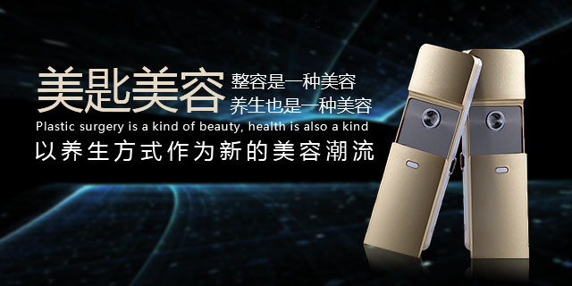

 关于我们 产品展示 新闻中心 联系我们 公司新闻 产品新闻 业界新闻 总结美容院会失去顾客的20大原因 2017.01.06 1、技术不精通，手法不准确，缺乏理论知识； 2、对皮肤测试了解不够，对皮肤的分析说明不能令客人满意； 引起皮肤暗黄的原因都有哪些 2017.01.08 专家表示，皮肤的颜色和光泽能反映皮肤的营养情况，也能反映内在脏腑的健康状态，可以说是我们身体的警报 美容院养生疗法分类 2017.01.10 艾灸疗法:临床最常用的灸法。指以艾绒为材料进行的烟熏疗法 早睡早起有助于自然养颜 2017.01.12 熬夜与夜生活逐渐成为了都市人常见的生活方式 喝水有助于延迟皮肤衰老 2017.01.14 人的组成不能缺少水分，水占人体的 查看更多